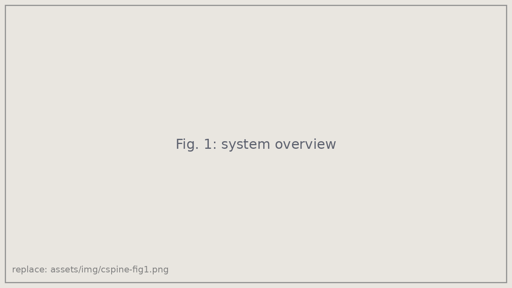
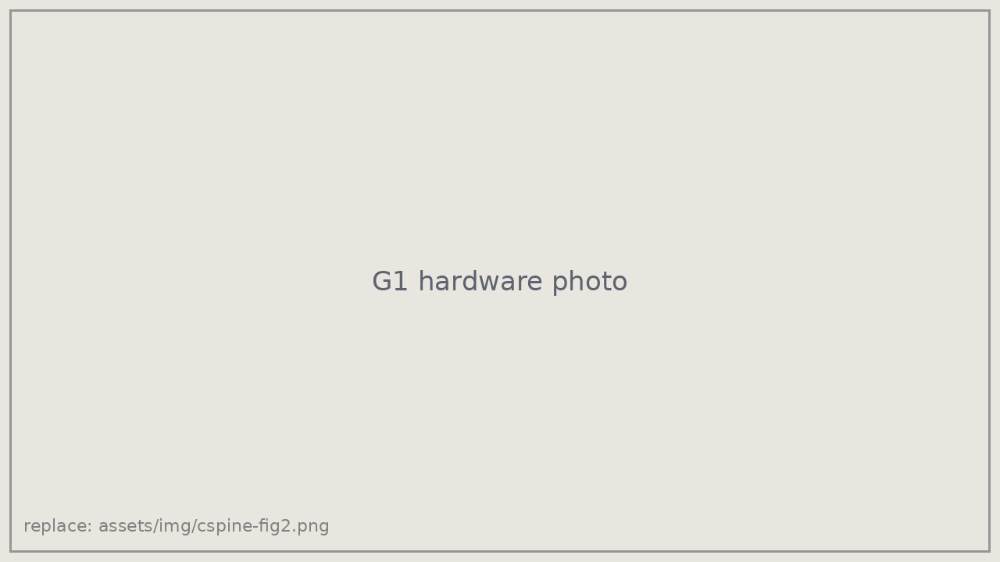

Second authorICRA 2027 (under review)
Bi-manual Stabilization of the Cervical Spine for Safe Physical Human-Robot Interaction in Rolling Maneuvers
Under review at IEEE International Conference on Robotics and Automation (ICRA), 2027
Overview
When an injured person must be rolled, for example during casualty extraction, their head and neck have to be held in line with the spine to avoid worsening a possible spinal injury. This normally takes trained responders. This work develops a two-arm controller that stabilizes the cervical spine through the roll, and demonstrates it on a Unitree G1 humanoid. [Adjust in your own words and add the headline result.]
Approach
- Bimanual stabilization: [how the two arms share the load and hold alignment]
- Safe physical interaction: [force limits, compliance, or optimization constraints]
- Simulation to hardware: developed in simulation, then integrated on the G1 humanoid for real-world experiments.


My contribution
- Integrated the stabilization controller onto the Unitree G1 humanoid platform for real-world experiments.
- [Add anything else you owned: simulation, inverse kinematics, experiments, analysis.]
Citation
@article{peiros2026cspine,
title = {Bi-manual Stabilization of the Cervical Spine for Safe Physical
Human-Robot Interaction in Rolling Maneuvers},
author = {Peiros, Elizabeth and Bohley, Moira and others},
journal = {arXiv preprint arXiv:2610.04220},
year = {2026}
}